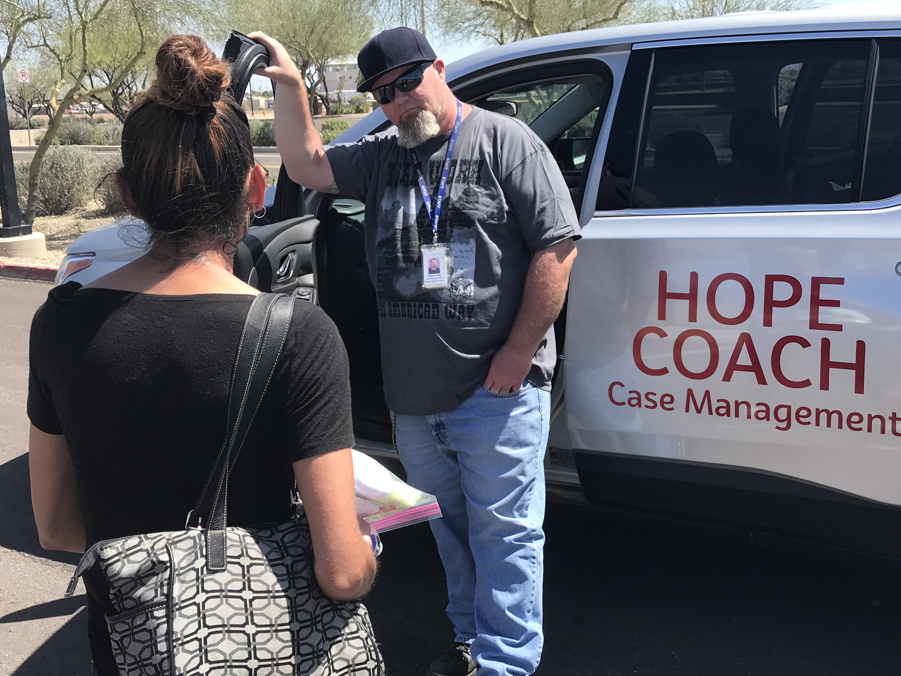

Journalism
in action

Photo courtesy of Phoenix Rescue Mission Facebook page.
Layers of policy and mandated bureaucracy slow down rehousing process
Years of addressing housing in the “right way” at city and state levels have created unintentional barriers to access for people experiencing homelessness to find short- and long-term housing.
Piper Hansen
The solution to housing seems simple. Collaborative funding across all levels of government and a political will to eliminate extra steps in housing development could result in housing more people. But complicating factors and the upkeep of paperwork stall the process of getting people experiencing homelessnesss into housing.
Tools like inclusionary zoning, rent control and rent stabilization, short-term rental regulation and generous financing structures could increase the supply of affordable housing. However, these tools are preempted or limited by Arizona law, according to a November 2021 analysis of state level legal barriers to adopting affordable housing policies conducted by Arizona State University’s Morrison Institute for Public Policy.
The problem isn’t even what type of housing is accessible or how long it takes to get there, it’s simply that there aren’t enough homes to go around.
Phoenix and surrounding suburbs have done a relatively good job of enabling new housing supply by ensuring a functioning market that enables builders and developers to respond to increasing demand for housing.
In recent years, there has been a bad mix of labor shifting away from housing development and a massive population increase in Maricopa County leaving the number of affordable options next to none. From 2010 to 2020, Maricopa County’s population grew by 603,451 to 4,420,568 — twice the country’s growth rate in that time frame.
+15.8%
2010-2020 Maricopa County population growth
The Biden administration’s Department of Housing and Urban Development (HUD) has $10 million set aside for housing development in capacity-building grants to five national nonprofits. Luke Tate, managing director of ASU’s Office of Applied Innovation, said the funding likely won’t come through, but it is a step in the right direction.
“It represents the strongest federal statement ever: That it is a national problem that our housing markets are not functioning well,” Tate said. “And we’re not building enough new supply. It’s driving up costs for working families, and it’s causing inflow into the homelessness system and to people experiencing homelessness.”
Tate served as special assistant to the president for economic mobility on President Barack Obama’s White House Domestic Policy Council. He oversaw a team working on housing and homelessness coming off a stint as a senior advisor for urban policy at HUD.
“In any community, you’re going to have people experiencing homelessness,” Tate said. “And the resources to help them get rapid rehousing, to get permanent supportive housing, those resources exist at the federal level, but are insufficient to fully solve the problem. If we wanted to see an end to homelessness in Arizona, it is not beyond our reach, it would just require the state stepping up.”
Margaret Kilman is a senior program manager at the Corporation for Supportive Housing, a nonprofit working to provide housing access as a starting point to building healthy communities. She uses more than 10 years of experience developing and implementing homelessness and housing programs and spent time as the senior policy advisor and program administrator for Maricopa County’s homelessness programs.
“We have a supply problem for affordable housing,” Kilman said. “There are things that states, cities and counties can do. It’s a matter of having the political will to do them.”
In February, State Reps. César Chávez (D-Maryvale) and Steve Kaiser (R-Phoenix) hoped a bill they drafted would streamline zoning regulations and put more money in the state’s Department of Housing Trust Fund to curb rising housing costs. The bill set density and height thresholds for new construction and proposed almost $90 million be reserved to help those experiencing homelessness get into permanent housing. The bill ultimately was tabled and transformed into a committee to study the shortage of housing options.
The bill would have done what many have pointed to as the root of the problem. It would have made it easier to build homes that would help eliminate homelessness.
“There are a number of strategies that are showing great results,” Kilman said. “But in many communities, the problem has become so severe. … I don’t think that those (supportive housing investment programs) are necessarily going to solve the problem because we’ve got some structural deficits that we need to overcome, primarily housing production.”
Organizations step in to fill gaps in support left by government services
In the absence of the state and federal support that has been held up or gone unused, the responsibility to fill in gaps in services falls to nonprofits and other non-governmental organizations.
Organizations like Phoenix Rescue Mission, a faith-based organization that works toward finding solutions for people experiencing homelessness, addiction, hunger and other trauma, have faced the lack of support firsthand. There, case managers work to find people in need and connect them with resources at the mission and at organizations across the Valley, depending on their needs.
Case managers more often than not have already gone through one of Phoenix Rescue Mission’s programs. Spiritual recovery is at the center of the mission’s programs that include work-for-hire partnerships, food bank coordination, addiction treatment and finding people permanent and short-term housing.
Different from many city or state services, Phoenix Rescue Mission is staffed by people who have experienced the housing crisis — they work with people experiencing homelessness daily and have seen Phoenix’s lack of affordable housing worsen in the last decade. One of them is Mindy Gray, a case manager at the mission.

Mindy Gray, a case manager at Phoenix Rescue Mission, works to conduct outreach to people experiencing homelessness and distribute resources. Courtesy of Phoenix Rescue Mission
“My fear is that right now we have this huge homeless problem and it’s growing bigger,” Gray said. “Our hotlines every day, we have call after call after call after call, and it’s ‘emergency housing,’ ‘emergency housing,’ ‘I’m getting evicted,’ ‘emergency housing,’ ‘how do I just get some transitional housing?’ It just goes on.”
Kilman, Tate and case managers said the process to help a person experiencing homelessness into a home is fairly simple. There is paperwork required, but every person’s experience is different and dependent on the market and availability at the time.
“Folks have various different reasons for how they ended up experiencing homelessness. And then also the path that they take can be very unique to exit homelessness,” Kilman said. “But we do have these discrete interventions that are fairly common the communities deploy in order to provide resources for folks — so that includes developing emergency shelters or bridge housing. In the pandemic, we saw movement away from congregate emergency shelters.”
City programs include emergency housing and housing vouchers that are typically more accessible, but only if the person experiencing homelessness has a clean housing record. They should have no previous evictions and must prove they are able to pay rent, which means they have a stable job or an acceptable credit score. There are too many barriers to be able to get people into affordable housing, according to Matthew Hendry, a Phoenix Rescue Mission case manager.

Matthew Hendry, a case manager who conducts street outreach at Phoenix Rescue Mission, said he wants to see more options for affordable housing and transitional housing in the next five years. Courtesy of Phoenix Rescue Mission
“The affordable housing is disappearing left and right,” he said. “It’s disappearing so quickly because of rising housing costs, rising rent, inflation. Everything is going up and then people’s incomes are staying the same.”
Progress depends on networking and affordable housing availability
These barriers on top of the lack of affordable housing that has been regulated to a point of constraint don’t help ease the process of getting people housed. Kilman said density regulations, higher restrictions for building construction, parking requirements and a general NIMBY (not in my backyard) attitude all contribute to the ongoing struggle.
“We can’t even start to think about supportive housing without affordable housing,” Kilman said. “The housing problem is really at the foundation.”
Much of the responsibility for housing falls to cities that are given little to no support from the state or federal government without hoops to jump through. Funding is allocated based on a number of criteria, and the city doesn’t always have personnel ready to put up with the rigamarole. Another case manager, Don Bishop, said “part of what works for barriers is the networking” between organizations and local governments with differing resources for providing support.
Case managers at Phoenix Rescue Mission said they appreciate the efforts of the city and of the state, but there’s still work to be done to make the rehousing process effective, said Rich Heitz, a case manager at the organization. Even an easier rehousing process could take anywhere from seven to 11 months, he said.
Phoenix Rescue Mission case manager Rich Heitz is a leader for the organization’s street outreach efforts. Courtesy of Phoenix Rescue Mission
“And the time manner it takes to get people housed, there really could be a speedier process with less paperwork and more hands on deck and more availability,” Heitz said.
Amid the challenges of decentralized, limited and disconnected services for people experiencing homelessness, the team knows what to do and what strategies to deploy.
“We get good at jumping through hoops or looking for loopholes,” Gray said. “We get good at what we do through repetition.”
But for case managers, Tate and Kilman, the solution to the problem is simple. Things like inclusionary zoning, rent control and stabilization, short-term rental regulation and robust financial support for housing programs could get more people into housing and increase housing availability. They’re still trying to grasp why their ideas haven’t been implemented.
“It’s not designing a health care system and trying to figure out how universal insurance availability would work,” Tate said. “It’s really as simple as saying, ‘No kid ought to be without a home,” and then providing the resources necessary to address that.”